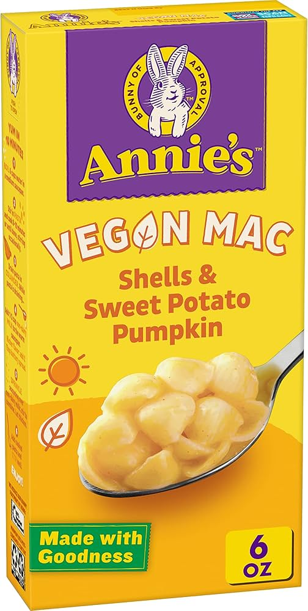

Annie's Vegan Mac

Ingredients
- Box of Annie's Vegan Mac
- Almond Milk
- Butter
- Nutritional Yeast
- Broccoli
Steps
- Make box of mac per box instructions.
- While pasta is cooking, saute broccoli florets over medium heat until lightly crispy.
- When pasta is finished cooking, strain pasta and return to pot. Combine butter, almond milk, and packet ingredients in pot and stir.
- Add nutritional yeast and broccoli and stir until well combined.